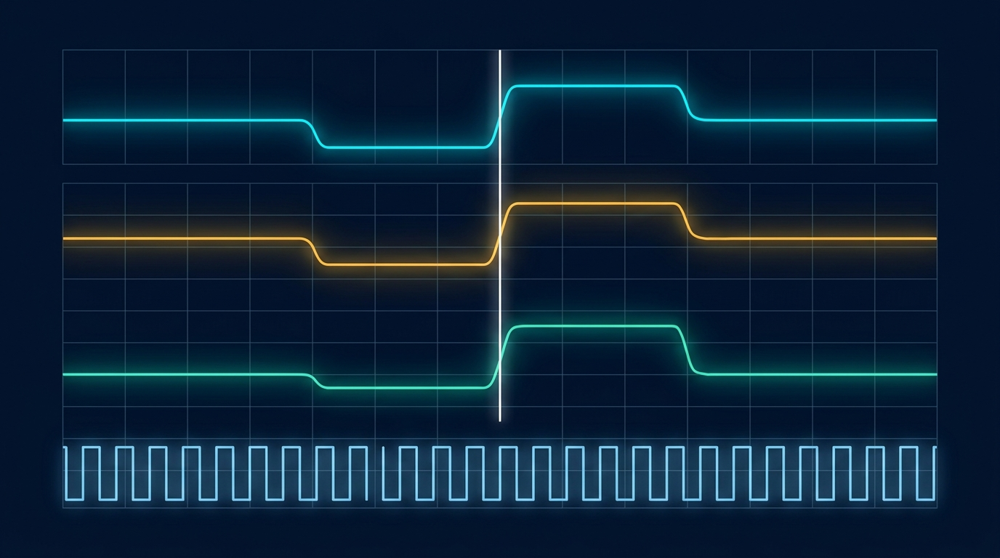
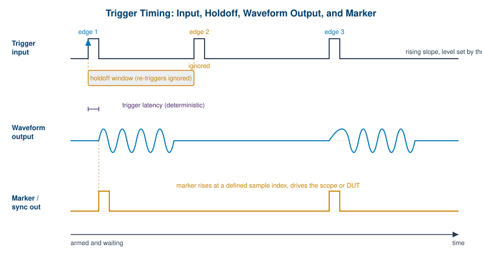
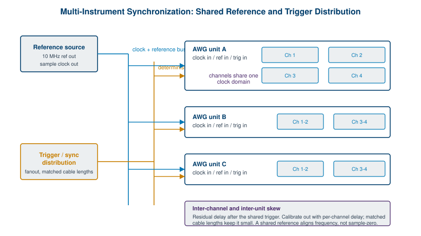

Chapter 7: Triggering, Synchronization, and Multi-Channel

Up to this point the AWG has been a soloist. It computes a waveform, stores it, and plays it back. The moment you ask it to start at a particular instant, to coordinate with an oscilloscope or a device under test, or to run several channels that must hold a fixed relationship with one another, you have moved from playing a note to conducting an ensemble. This chapter is about the timing infrastructure that makes that ensemble possible: how a generator decides when to start, how it tells the rest of the bench what it is doing, how a shared clock keeps everyone in step, and how a careful engineer keeps many channels phase-coherent across one chassis or several.
The recurring theme is the difference between approximately together and provably together. A lot of test setups look synchronized on a slow time scale and fall apart on a fast one. Getting the distinction right is the whole game, and it starts with the trigger.
7.1 Trigger Modes
The trigger is the answer to one question: when does the waveform start? An AWG sitting in its idle state has a waveform loaded and a clock running, but it is not yet emitting the signal you care about. The trigger is the event that releases it. The behavior after that release is what defines the trigger mode, and most instruments offer the same handful.
Continuous mode is the simplest. The waveform plays and repeats indefinitely with no trigger required, looping from the end of the record back to the start. This is what you want for a steady reference tone or a free-running clock. Triggered, or single-shot, mode arms the instrument and waits. On the trigger event it plays the waveform exactly once, then returns to the armed state to wait for the next event. This is the mode for capturing a one-time response, firing a single radar pulse, or timing an output against an external stimulus. Gated mode ties output to the level of a control signal: the waveform runs while the gate is asserted and pauses, or stops, when it is released, which is useful for bursts whose duration is set by something outside the instrument. Burst mode plays a defined number of cycles or records on each trigger, then stops and re-arms. A burst of exactly ten cycles on every external pulse is a common requirement in component characterization, and burst mode delivers it without you having to build the count into the waveform itself.
The trigger source decides where the start event comes from. An internal trigger is generated by the instrument's own timer, which lets it free-run at a programmed rate without any external connection. An external trigger comes in on a dedicated input, typically a TTL or adjustable-threshold signal from another instrument or a system controller. A manual trigger is a front-panel button or a soft control for bench work and debugging. A bus or software trigger arrives as a command over the remote interface (USB, LAN, or GPIB), which is how an automated test sequence fires the generator in lockstep with the rest of a script.
Three smaller parameters shape how an external trigger behaves, and they cause more confusion than their size suggests. Slope selects whether the instrument triggers on the rising or falling edge of the input. Level sets the voltage threshold the input must cross to count as an edge, which matters whenever the trigger signal is not a clean logic level. Holdoff is a blanking interval after a valid trigger during which further triggers are ignored, so a noisy or bouncing edge cannot fire the instrument twice. After the waveform finishes and the holdoff expires, the instrument re-arms, meaning it returns to the ready state to accept the next qualifying trigger. Get the holdoff too short and you double-trigger on ringing. Get it too long and you miss legitimate events. Tuning it is part of bringing up any triggered measurement.

Engineer's corner. The single most useful habit in triggered work is to put a counter or a scope on the trigger line itself before you trust the output. Half the synchronization bugs you will ever chase are not in the waveform or the instrument. They are an extra edge on a noisy trigger, a threshold set below the noise floor, or a holdoff left at its default. Verify the trigger is exactly as clean and as frequent as you think it is, then move on to the signal.
| Trigger mode | What it does on the event | When to use it |
|---|---|---|
| Continuous | Plays and repeats forever, no trigger needed | Reference tones, free-running clocks, steady stimulus |
| Triggered (single-shot) | Plays the record once, then re-arms | One-time responses, single radar pulses, event-timed output |
| Gated | Runs while the gate is asserted, pauses when released | Bursts whose length is set by an external control signal |
| Burst | Plays a fixed cycle or record count, then stops and re-arms | N-cycle component tests, controlled wakeup sequences |
7.2 Markers and Sync Outputs
If the trigger is how the world tells the AWG when to start, the marker is how the AWG tells the world what it is doing. A marker, sometimes called a sync output, is a digital pulse that the instrument emits in a known, repeatable relationship to its own waveform. You define where the pulse goes by tying it to a sample position in the record. Sample 0 might raise the marker, sample 4096 might lower it, and the result is a clean digital edge that lands at a precise point in the analog output every time the waveform plays.
Markers exist to coordinate the rest of the bench. The most common use is triggering an oscilloscope: rather than letting the scope guess where to trigger on a complex analog waveform, you hand it a clean marker edge aligned to the exact feature you want to view, and the display sits rock-steady. Markers also gate a device under test, enable a power amplifier only during the active part of a pulse, advance a switch matrix between waveform segments, or signal another instrument that a particular segment has begun. Because the marker is generated from the same clock and sample stream as the analog output, it carries the instrument's own timing precision rather than a software-driven approximation.
The catch is that aligned in principle is not aligned at the connector. Two practical imperfections show up. Latency is the fixed delay between the sample position you specified and the moment the edge actually appears at the marker output, caused by the digital and analog stages the signal passes through. As long as it is constant, latency is easy to live with: you measure it once and account for it. Skew is the relative timing error between the marker and the analog waveform it is supposed to mark, or between one marker and another. Skew is the troublesome one, because it varies with cable length, loading, and sometimes temperature. The fix is the same in every case: measure the marker against the analog output on a fast scope, then apply a programmable delay to one or the other until they line up where you need them.
Pro tip. Treat a marker as a measurement of the AWG, not just a convenience for the scope. Once you have characterized the latency from a chosen sample index to the marker edge, and the skew between the marker and the analog output, you can use the marker as a built-in time reference for everything downstream. A known marker edge is often the cleanest timing fiducial on the entire bench.
7.3 Clocking and the Reference
Everything an AWG does in time is governed by a clock. The sample clock is the heartbeat that steps the instrument from one sample to the next, and its frequency is the sample rate. By default the instrument generates this clock internally from an onboard oscillator, which is fine for standalone work. The trouble starts the moment you have more than one instrument, because two free-running oscillators, however good, drift relative to each other. Within minutes their sample streams slide apart, and any measurement that depends on a fixed timing relationship between them slowly falls out of alignment.
There are two ways to pull instruments onto a common time base, and the distinction between them is the most important idea in this chapter. The first is the external sample clock input. Here one instrument's sample clock, or an external clock generator, drives the sample clock of every other instrument directly. Every generator steps its samples on literally the same clock edges, which is the tightest form of synchronization available. The second is the 10 MHz reference. Nearly every piece of RF and timing gear has a 10 MHz reference input and output. You designate one instrument or a dedicated standard as the reference, distribute its 10 MHz to every other instrument's reference input, and each instrument phase-locks its internal oscillator to that common reference.
Here is the subtlety that catches people, and it is worth stating plainly. A shared 10 MHz reference disciplines frequency, not phase at the sample level. Two instruments locked to the same 10 MHz reference will run at exactly the same average sample rate, so they will not drift apart over time. That is a real and valuable property. But the reference says nothing about which sample each instrument is playing at a given instant. Each instrument's internal clock divider can come up in a different phase, so two reference-locked generators can be running the same sample rate while sitting tens or hundreds of picoseconds apart, or even a full sample apart, at start. A shared reference gives you frequency coherence. It does not, by itself, give you deterministic sample alignment. For that you need either a shared sample clock or an explicit synchronization protocol that resets the clock dividers together and applies a common start trigger.

7.4 Multi-Channel and Multi-Instrument Synchronization
Many applications need more than one coordinated output. An IQ modulator wants two channels in a fixed phase relationship. A MIMO communications test wants several transmit streams that hold their relative timing. A phased array wants a precise, often steerable, phase offset between every element. The cleanest way to deliver these is with multiple channels inside a single chassis, because channels that share one instrument also share one sample clock and one trigger fabric by design. They start on the same edge and step on the same clock, so the only timing error between them is the small, fixed, calibratable skew of their separate output paths.
Berkeley Nucleonics builds for exactly this case. The Model 686 provides 2 or 4 fully synchronized analog channels paired with 32 digital lines per unit, which suits dense scenarios that need both coordinated analog outputs and digital control or pattern signals alongside them. The Model 685 offers up to 4 synchronized channels for high-speed multi-channel work. Both keep their channels on a common clock domain so the inter-channel relationship is deterministic rather than approximate. As always, confirm the current channel counts and synchronization specifications against the datasheet at berkeleynucleonics.com before you design around them.
Inter-channel skew is the residual timing difference between channels that should be perfectly aligned. Even within one chassis it is never exactly zero, because each channel has its own DAC output stage, filtering, and connector path, and those paths differ by small amounts. The good news is that this skew is stable and repeatable, which means it can be measured once and removed with a per-channel programmable delay. After calibration, a well-built multi-channel instrument holds its channels aligned to a small fraction of a sample period.
Scaling past the channel count of a single instrument means distributing clock and trigger across several units, which is where Figure 7.3 applies. You carry a shared sample clock or 10 MHz reference to every unit on matched-length cables, and you carry a common start trigger on its own distribution path. The hard requirement is a deterministic start: every unit must leave sample zero on the same clock edge, not merely at the same average rate. Achieving that takes more than a shared reference. It takes a synchronization scheme that aligns the clock dividers across units and latches a single start trigger into all of them on a known edge, so the first sample of every channel on every unit emerges together. Once that is in place, the same per-channel delay calibration that handles intra-chassis skew handles the inter-unit skew too.
| Method | What it shares | What it guarantees | What it does not guarantee |
|---|---|---|---|
| Independent internal clocks | Nothing | Standalone operation | Any fixed relationship between instruments |
| Shared 10 MHz reference | Frequency reference | No long-term drift; common average rate | Sample-level phase alignment at start |
| Shared sample clock | The actual sample clock edges | Common stepping, tight frequency coherence | A common start point without a shared trigger |
| Shared clock + sync protocol + start trigger | Clock, divider phase, and start event | Deterministic sample-aligned start across units | Removal of fixed path skew (calibrate that out) |
7.5 Phase Coherence and Skew
Phase coherence is the property that two or more channels hold a fixed, known, and stable phase relationship over time. It is stronger than frequency coherence, which only requires the channels to run at the same average rate. Phase-coherent channels share both the same clock and the same start, so a sine on one channel and a sine on another stay locked at, say, exactly ninety degrees apart indefinitely, rather than slowly creeping. This is the property that beamforming and IQ work cannot do without, and it is the reason the shared-clock-plus-start-trigger approach matters so much.
Calibrating skew is the practical work of turning a phase-coherent instrument into a phase-accurate measurement. The procedure is unglamorous and effective. Output the same signal, often a single tone or a fast edge, on every channel at once. Capture them together on a fast oscilloscope or a calibrated receiver. Measure the time or phase offset between channels. Apply a per-channel programmable delay to pull them into alignment, then verify. Because the underlying skew is stable, this calibration holds until something physical changes, such as swapping a cable or a large shift in temperature, at which point you repeat it. Keeping a stored calibration per cable configuration saves a great deal of bench time.
Two applications make the payoff concrete. In beamforming and phased arrays, the direction of the transmitted beam is set entirely by the phase relationships among the elements. A skew error of a few degrees steers the beam off target or smears its pattern, so the channels must be phase-coherent and the residual skew must be calibrated to a tight bound. In IQ generation, the in-phase and quadrature channels must sit exactly ninety degrees apart in phase and exactly matched in amplitude. Any phase error between them rotates and distorts the constellation, and any timing skew smears the symbols, which is precisely the failure described in the previous chapter. In both cases the chain is the same: a shared clock for frequency coherence, a common start for phase coherence, and a skew calibration to convert that coherence into accuracy.
The honest summary of this chapter is that synchronization is a stack, not a switch. Frequency coherence comes from a shared reference. Sample-level alignment comes from a shared clock and a deterministic start. Phase accuracy comes from calibrating out the fixed skew that remains. Skip any layer and your channels will look synchronized right up until the measurement that depends on the layer you skipped. Build the whole stack and you get an instrument that conducts its channels as one.
Check Your Understanding
Five quick questions on this chapter. Your answers save on this device.